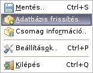

|  |
| Mentés.. | adatlap mentése szöveg vagy html formátumban |
| Adatbázis frissítés.. | adatbázis eltávolítás vagy frissítés fájlból vagy az internetrõl (csak a "pro" változatnál aktív) |
| Csomag információ.. | csomaginformációk |
| Beállítások.. | az alkalmazás beállításai |
| Kilépés | az alkalmazás bezárása |
|